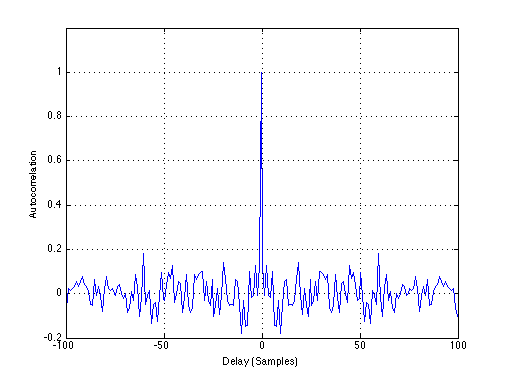
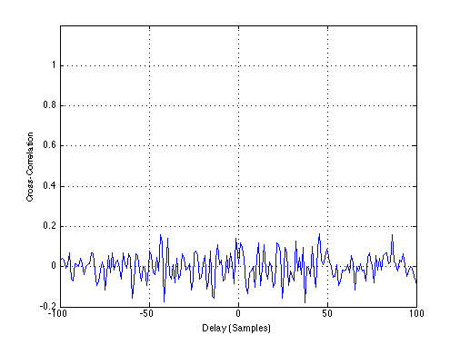

Antenna gain for constant weighting with N=16 and d=\lambda/4
Copyright 2007 Telecommunications Lab
clength=127; lag=-(2*clength-1)/2:(2*clength-2)/2; a1=zeros(1,7); b1=zeros(1,7); a1(1)=1; b1(1)=1;
%%%%%%%%%%%%%%%%%%%%%%%%%%%%%%Gold Sequence gold1%%%%%%%%%%%%%%%%%%%%%%%% % first PN-Sequence: for n=1:120 a1(n+7)=rem(a1(n)+a1(n+3),2); end; % second PN-Sequence : for n=1:120 b1(n+7)=rem(b1(n+1)+b1(n+2)+b1(n+3)+b1(n+4)+b1(n+5)+b1(n),2); end; % Gold code c: gold1=rem(a1+b1,2); gold1=2*gold1-1;
%%%%%%%%%%%%%%%%%%%%%%%%%%%%%%%%%%%%%%%%%%%%%%%%%%%%%%%%%%%%%%%%%%%%%%%%% %%%%%%%%%%%%%%%%%%%%%%%%%%%%%%%%Gold Sequence gold2%%%%%%%%%%%%%%%%%%%%%%%% a2=zeros(1,7); b2=zeros(1,7); a2(1)=1; b2(1)=1; % first PN-Sequence: for n=1:120 a2(n+7)=rem(a2(n)+a2(n+4),2); end; % second PN-Sequence : for n=1:120 b2(n+7)=rem(b2(n+1)+b2(n+3)+b2(n+4)+b2(n+6)+b2(n),2); end; % Gold code c: gold2=rem(a2+b2,2); gold2=2*gold2-1; %%%%%%%%%%%%%%%%%%%%%%%%%%%%%%%%%%%%%%%%%%%%%%%%%%%%%%%%%%%%%%%%%%%%%%%%%%%
%%%%%%%%%%%%%%%%%%%%%Plotting the Autocorrelation%%%%%%%%%%%%%%%%%%%%%%%% plot(lag,(xcorr(gold1,gold1,126))/clength,'Linewidth',1.5) xlabel('Delay (Samples)');ylabel('Autocorrelation') grid on; axis([-100 100 -0.2 1.2])
%%%%%%%%%%%%%%%%%%%%%Plotting the Cross-Correlation%%%%%%%%%%%%%%%%%%%%%% plot(lag,(xcorr(gold1,gold2,126))/clength,'Linewidth',1.5) xlabel('Delay (Samples)');ylabel('Cross-Correlation') grid on; axis([-100 100 -0.2 1.2])